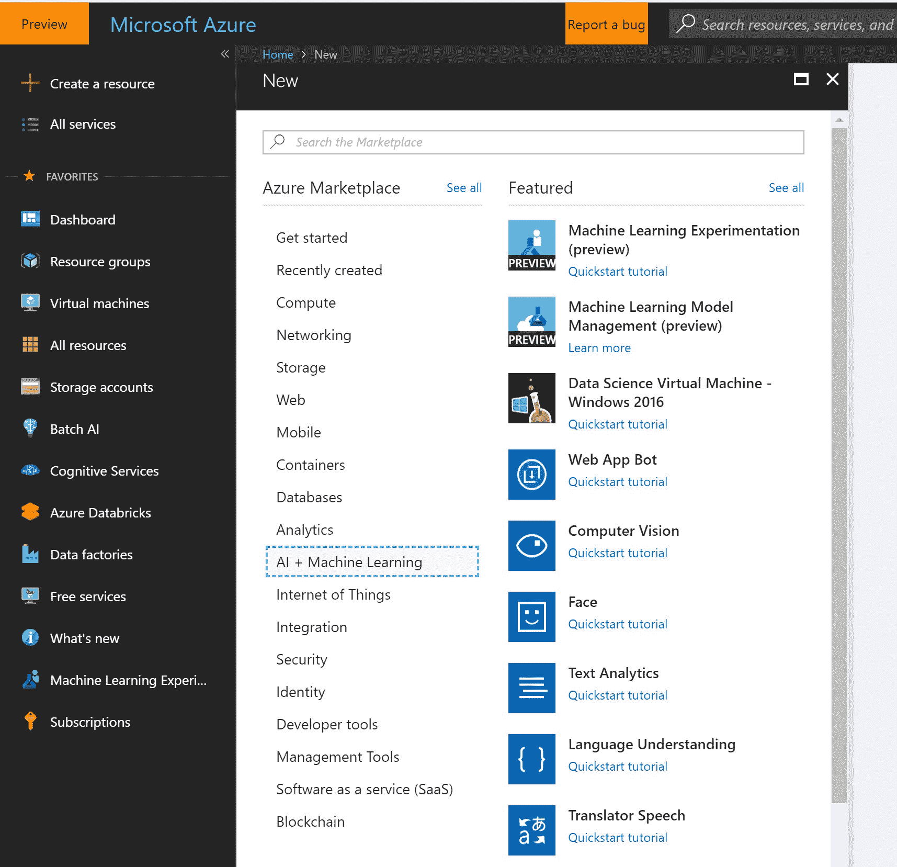
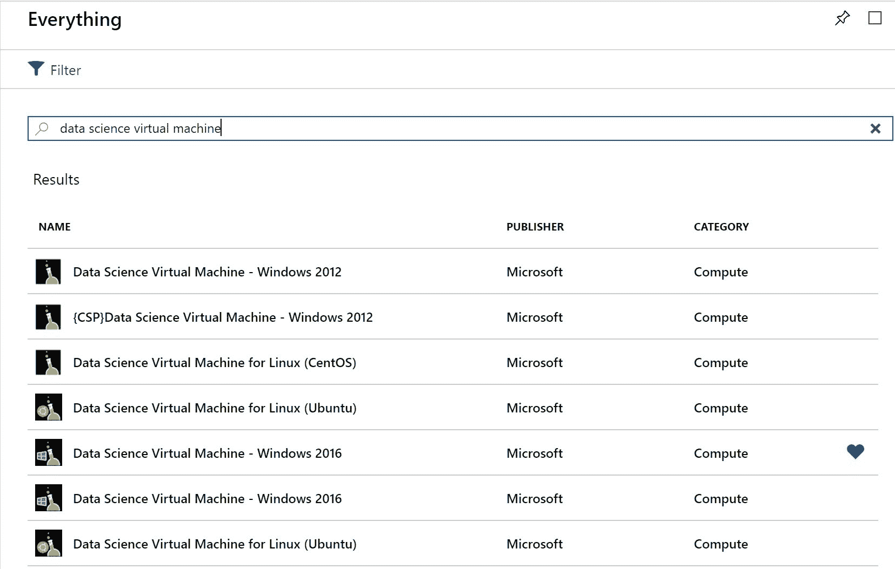
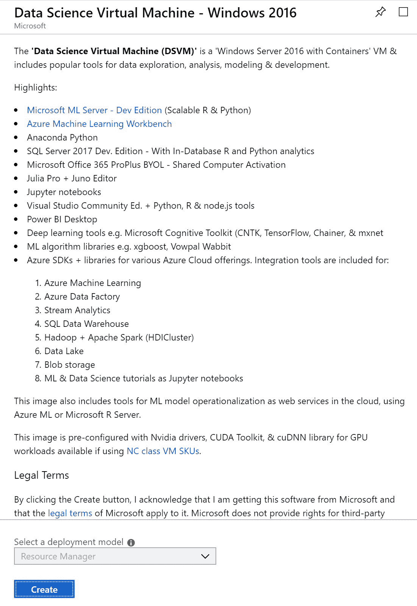
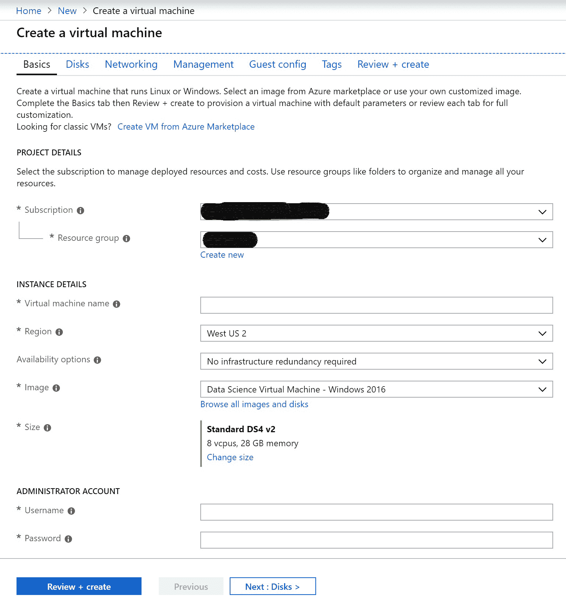
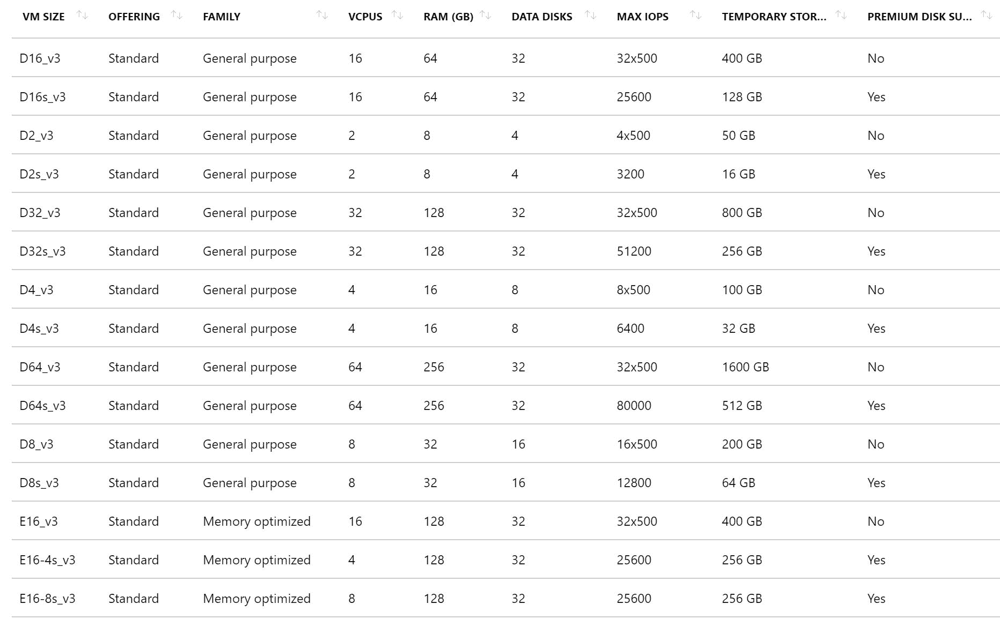
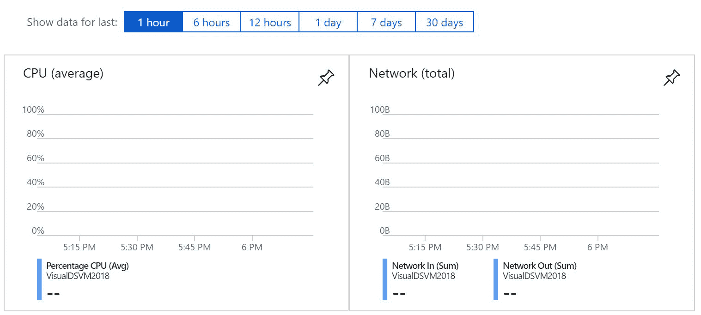
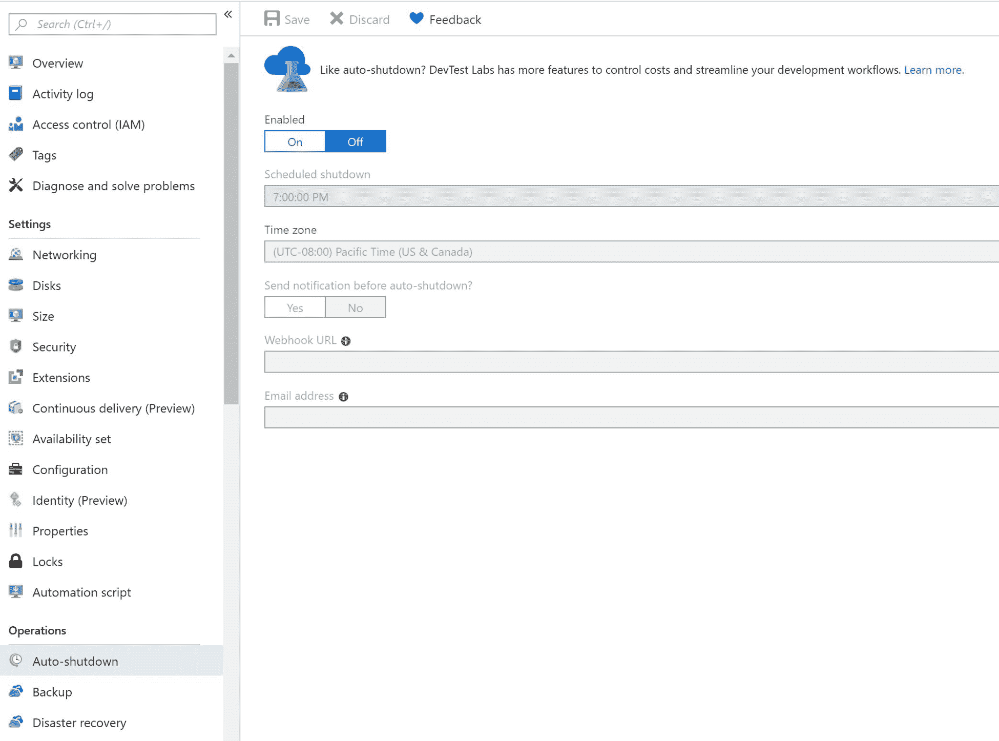
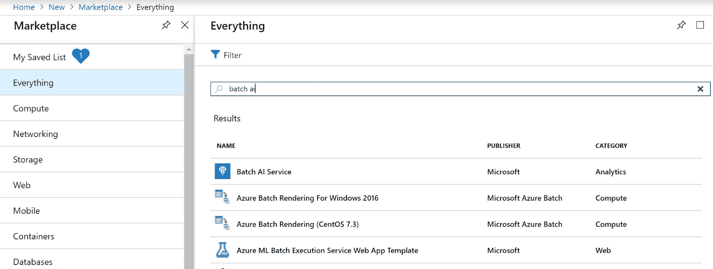

在本章中，我们将学习如何在数据科学中使用 Azure。我们将了解如何准备数据，包括清理和转换数据、创建工程特征、创建和训练机器学习模型，以及最后使用机器学习模型进行预测。
用大数据构建机器学习算法，我们需要处理大量的数据来训练它。要做到这一点，我们需要大量的计算能力。我们还需要计算能够基于负载动态扩展，以大规模服务于这些机器学习模型，以便它们可以执行预测。
在公共云出现之前的时代，我们必须事先购买所有硬件。我们不得不为这一切买单，...
Azure 中有两种类型的扩展可以帮助我们扩展 CPU 和/或 GPU:
DSVM 是一个 Linux 或 Windows 容器，由流行的数据科学工具和框架组成。它可以帮助我们快速开始数据分析和数据科学。它支持许多操作系统；目前，我们可以使用 Windows 2012、Windows 2016、Ubuntu Linux 和 CentOS Linux 创建 DSVM。DSVMs 背后的想法是减少创建工作环境所需的时间。
DSVM 具有经过兼容性测试的预配置库。它每隔几个月更新一次，以便使用最新的兼容版本的工具、库和框架。它支持 GPU 虚拟机，并预装了必要的驱动程序。DSVM 还包括如何开始的教程和指南。
DSVM 是可能的...
现在让我们来看一下创建 DSVM 所需的步骤。在本例中，我们将创建一个 Windows 2016 DSVM，但如果您想要创建一个 Linux DSVM，步骤是类似的:





请稍等几分钟，Azure 将创建我们的虚拟机。一旦准备就绪，我们将在门户中收到通知。
创建虚拟机后，我们可以使用 RDP 或 SSH 来访问它，具体取决于操作系统。在 overview 窗口中，我们可以查看虚拟机运行时的不同指标，如 CPU 使用率或磁盘操作。这些指标可以帮助我们决定是否需要调整虚拟机的大小:

我们还可以使用门户中的自动关闭选项将虚拟机配置为自动关闭:

在我们登录到我们的 DSVM 之后，我们可以开始使用它的工具，就像它是我们的本地机器一样。有关每个工具的更多信息，请参考以下网站:https://docs . Microsoft . com/en-us/azure/machine-learning/data-science-virtual-machine/provision-VM # important-directory-on-the-VM。
在使用虚拟机之后，我们可以从门户中停止它，以避免支付不必要的费用。当我们将来想要使用它时，我们可以再次启动它，而不必重新创建它。
现在，我们来看一下 DSVM 的一种变体——DLVM。
DLVM 是一种特殊类型的 DSVM，它具有为深度学习定制的基础映像。我们可以使用 Windows 2016 或 Ubuntu Linux 作为操作系统。它预装了框架、工具和教程，可以让你快速开始深度学习。
配置 DLVM 类似于配置 DSVM。我们需要为 DLVM 选择一个基于 GPU 的 VM:
DSVMs 和 DLVMs 擅长执行基于单个节点的计算。然而，在我们需要分布训练的场景中，我们可以使用 Batch AI 服务，它允许我们专注于训练，而不必担心管理集群。Batch AI 服务拥有与 DSVM 使用相同基础映像的 VM，这意味着 DSVM 中可用的所有库、工具和框架在 Batch AI 服务中也是可用的。批处理 AI 服务允许我们使用并行训练和基于 GPU 的虚拟机进行深度学习，我们还可以将 Docker 容器部署到批处理 AI 节点。当使用 Batch AI 服务时，我们可以用我们的集群挂载我们的 Azure Blob 或 Azure Data Lake 存储。这意味着我们可以用大量的数据进行训练，而不必将数据复制到集群中，因为数据可以以流的形式传输。
在撰写本文时，批量 AI 服务仅作为预览版提供，因此当该服务普遍可用时，可能会有新的功能。
现在让我们继续创建一个批处理 AI 服务:

作为一名数据科学家，在我们训练了我们的机器学习模型之后，我们可能希望将模型部署为 web 服务，以进行实时或批量评分。当我们训练我们的机器学习模型时，我们使用一定的框架和库。在大多数情况下，相同的环境应该在我们的部署环境中可用。容器是创建这样一个环境的快速而简单的方法，在这个环境中，我们可以托管我们的模型和依赖项。使用 ACI 可以很容易地创建容器。作为数据科学家，我们可以使用 AML 将我们的机器学习模型作为 web 服务部署到 ACI。这样，我们可以开发测试我们的模型，然后在生产中部署它。有关 ACI 的更多详情，请参考以下网站:https://docs . Microsoft . com/en-us/azure/container-instances/container-instances-overview。
Kubernetes 是一个开源项目，用于管理托管在容器中的应用程序。AKS 是一个受管理的 Kubernetes 服务，它使使用 Kubernetes 变得很容易。一旦你测试了你的机器学习模型，你就可以用 AKS 把它部署到一个可扩展的集群。然后，您就可以为您的机器学习模型提供可伸缩的 web 服务。您可以使用 AML 将您的模型部署到 AKS。有关 AKS 的更多详情，请参考以下网站:https://docs.microsoft.com/en-us/azure/aks/intro-kubernetes。
在本章中，我们了解了不同类型的计算选项，可用于扩展您的机器学习培训和部署。我们了解了垂直和水平扩展计算选项，这些选项可用于为您的机器学习项目提供大量计算能力。
在下一章中，我们将了解机器学习服务器，它可用于内部部署。